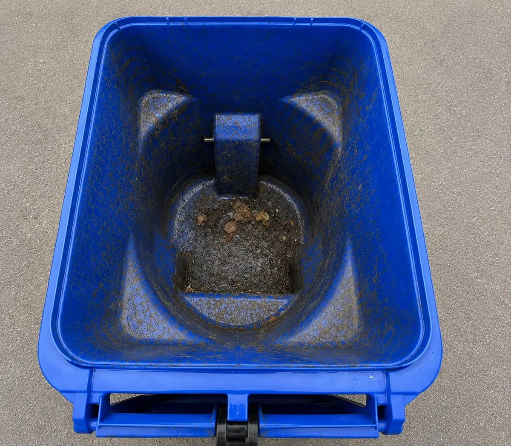
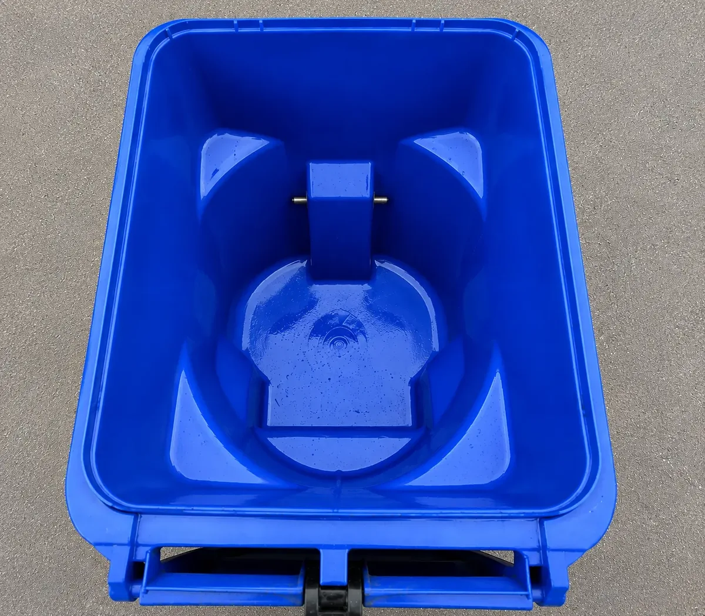

Cut the old-bin smell
Remove the residue behind common odors, so an empty cart can actually feel fresher.
Hawaii Bin Cleaning is bringing purpose-built residential trash bin cleaning to Oʻahu. After collection, our truck lifts, washes and deodorizes trash, recycling and green-waste carts while keeping the dirty wastewater contained onboard—not running across your driveway.

Drag the slider to compare the same residential bin before and after cleaning.
Collection day removes the trash. It does not remove the film, stuck-on residue and old-bin smell left behind. See what one professional cleaning can change, then explore our residential bin cleaning services.
Get Founders Discount Updates

Drag to reveal the clean bin
Leave the empty cart accessible after pickup. We bring the water, lifting equipment and cleaning system needed to handle the gross part without turning your driveway into the wash area.
Keep your trash, recycling or green-waste cart accessible at the curb after collection.
A dual hydraulic lifter positions the cart over specialized cleaning heads that reach the interior surfaces where residue and odors linger.
Used water is collected onboard instead of being left to flow across the driveway or toward the street.
This is not a pressure washer riding in the back of a pickup. Our Ford E-450 is being prepared as a complete residential bin-cleaning system.
The truck carries fresh water, uses dual hydraulic lifters and specialized cleaning heads, and stores recovered gray water separately. That means the cleaning can happen over a contained work area rather than on your driveway.
Explore Our Purpose-Built TruckThe bin lives beside the home, gets touched every week and spends days warming up between collections. A proper cleaning can make that routine noticeably better.
Remove the residue behind common odors, so an empty cart can actually feel fresher.
Keep carts, lids and handles looking more cared for beside your home.
Clear away food residue and organic buildup that can draw flies and other insects.
Routine cleaning removes residue that can attract rodents and other unwanted visitors.
Cleaner lids, handles and surfaces make the weekly trip to the curb a little easier.
Our equipment is designed to recover dirty water as part of a more responsible curbside process.
Join the Founding Member Interest List for launch news and route updates. There is no obligation to book. You can also learn why Hawaii Bin Cleaning is being built for Oʻahu.